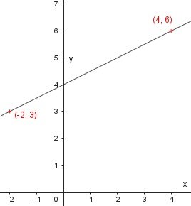

Lineare Funktionen Aufgabe 6 Ergänzen Sie die Wertetabelle für den Graphen der Funktion, und zeichnen Sie den Graphen. y = 0,5x + 4 x -2 4 y 3 6 x = -2 ---> y = -2 * 0,5 + 4 = 3 x = 4 --> y = 4 * 0,5 + 4 = 6 